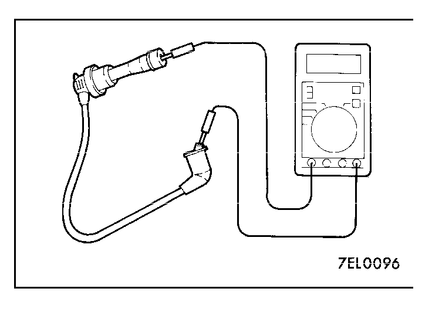

 SPARK PLUG CABLE RESISTANCE CHECK Measure the resistance of the all spark plug leads. (1)Check cap and coating for cracks. (2)Measure resistance. Limit: max. 22 kΩ

![[Previous]](https://mitsubishitechinfo.com/data/F24S/BUTTONS/fprevg.png)
![[Next]](https://mitsubishitechinfo.com/data/F24S/BUTTONS/fnextg.png)